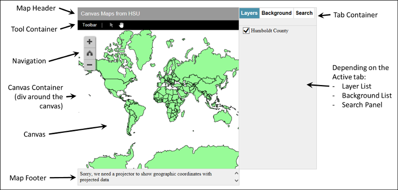

The Default Map
The default map includes the elements shown below (and a few others). You can control the display of each of these to customize your map.
There are two types of map layouts, re-sizable and "flowed". Flowing maps flow with the other HTML on the page. These maps are not re-sizable. Below is a sample of a simple
Re-sizable maps are absolutely positioned on the web page and because of this, the other elements on the page should also be absolutely positioned.
Take some time to play with the map and acquaint yourself with the various map elements shown below. The terms shown are used to access the map through the CanvasMap API.

The Reference web page documents the defines for each of the elements that you can control.
Now, continue with the other tutorials to see how to make your own maps with CanvasMap!